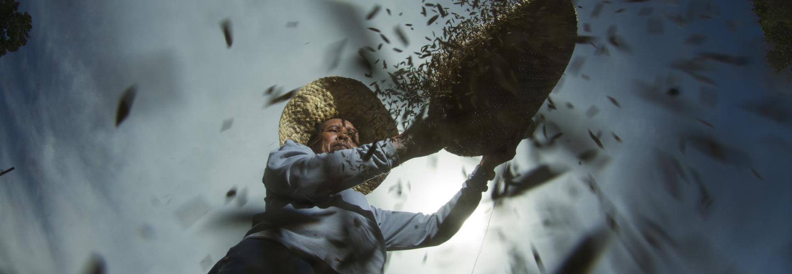

The Problem: Greenhouse Gases

According to UCAR (2020), for the past 150 years, the increase in carbon dioxide from burning fossil fuels and cutting down trees has led to a rise in greenhouse gases. The majority of greenhouse gases are produced by fossil fuels.
Here are some statistics on emissions:
| Region/Organization | Emissions Change (vs. 1990) |
|---|---|
| European Union (EU) | 37% drop (last year) |
What is being done in the Philippines?
According to the United Nations Development Programme (2023), The Philippines has committed to a projected greenhouse gas emissions reduction and avoidance of 75%, with 2.71 being unconditional. The government plans to implement changes in various sectors, including but not limited to agriculture, forestry, coastal and marine ecosystems, biodiversity, health, and human security. These actions aim to prevent, reduce, and respond to any remaining loss and damage.
Join the Movement
Ready to make a difference? Our "Your Ideas" page is designed for you. We want to hear your proposals and ideas on how to reduce greenhouse gas emissions in our communities. Your proposals can include encouraging energy conservation, using environmentally friendly transportation, reducing waste, and participating in earth-caring activities[cite: 5].
Share Your Ideas and Help Change the World!